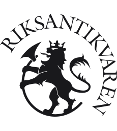

This overview is based on this XML output of the GLAMorous tool d.d. 01-03-2024.
It was generated using the GLAMorousToHTML code.
Also see the documentation of this tool.
This data is also available as an Excel file. More structured data formats (csv, json) will be added in the future.
Available languages
Nynorsk (915)
Nynorsk (303)
English (290)
Swedish (60)
Egyptian Arabic (53)
French (53)
German (45)
Danish (26)
Finnish (26)
Dutch (17)
Czech (14)
Spanish (9)
Polish (6)
Catalan (5)
Persian (5)
Eastern Armenian (4)
Esperanto (4)
Inari Sami (4)
Russian (3)
Cebuano (2)
Romanian (2)
Ukrainian (2)
Belarusian (1)
Bulgarian (1)
Galician (1)
Indonesian (1)
Italian (1)
Northern Sami (1)
Portuguese (1)
Slovene (1)
South Azerbaijani (1)
Vietnamese (1)
Nynorsk (915)
7._juni-plassen_(Oslo) |
Agatunet |
Agerup |
Akersgata_(Oslo) |
Alf_Schrøder |
Alstad_kirkested |
Alta |
Alvdal_kirke |
Alværn_i_Lavik |
Amland_gravplass |
Anda_fyr |
Andenes_fyr |
Andreas_Rogert |
Anker-Berskog_gård |
Asker_kirke |
Atneosen |
Atrå_stavkirke |
Aukra_kirke |
Aukra_prestegjeld |
Aurskog_kirke |
Austad_gård |
Austad_naturminne |
Austevoll_kirke |
Avaldsnes_kirke |
Bakke_kirke_(Øvre_Eiker) |
Barbu_kirke |
Barbu_prestegjeld |
Bastøy_fyr |
Bastøy_kirke |
Bekholdtgården |
Bellevuehøyden |
Bentegården |
Berg_kirke_(Skaland) |
Bergen_og_Omland_havnevesen |
Bergmannsgata |
Bergmo_småkirke |
Bergskrivergården |
Bevarte_trehus_i_Norge_fra_middelalderen |
Bindal_prestegjeld |
Birkeland_kirke |
Birkeland_prestegjeld |
Birkelunden |
Birkenes_kirke |
Bjarkøy_kirke |
Bjelland |
Bjelland_kirke |
Bjelland_prestegjeld |
Bjerkebæk |
Bjerkreim_kirke |
Bjerkreim_prestegjeld |
Bjølstad_gård |
Bjørgan_prestegård |
Bjørhusdal_gamle_skolekapell |
Bjørke_kirke_(Nannestad) |
Bjørnør_prestegjeld |
Blaker_kirke |
Blankvannsbråten |
Bodø_kirke_(1888–1940) |
Boen_Gård |
Bogatunet |
Borge_kirke_(Østfold) |
Borgstua_i_Kinsarvik |
Borgund_stavkirke |
Bossekop |
Bragernes_kirke |
Bragernes_torg |
Brannen_i_Lærdal_2014 |
Brekkestø |
Bremnes_kirke |
Bremstein_fyr |
Broch-huset |
Brochmanns_gate_(Oslo) |
Bryggen_i_Bergen |
Budsjord_Gard |
Buholmråsa_fyr |
Bulandet_bedehuskapell |
Bybrannen_i_Ålesund_1904 |
Bygland_kirke |
Bygningene_i_friluftsmuseet_på_Norsk_Folkemuseum |
Båntjern |
Bø_prestegård |
Bøkfjord_fyr |
Bøkker |
Bønsnes_kirke |
Carl_Knudsen-gården |
Christian_Christensen_Thomhav |
Christiane_Koren |
Christianelyst |
Christianskirken_(Skien) |
Christiestøtten |
Cochegården_(Brevik_gamle_rådhus) |
Colletts_gate_(Oslo) |
Daniel_Isaachsen |
Davik_kirke |
Davik_prestegjeld |
Den_drammenske_kongevei |
Den_gamle_Toldboden |
Det_Tumultuariske_Optrin |
Diderich_Hegermann |
Domenico_Erdmann |
Dovre_prestegård |
Drageid_kapell |
Drivstua_Fjeldstue |
Dronningen_(selskapslokale) |
Dybvåg_kirke |
Dønnesfjord_kirke |
Efteløt_kirke |
Egelands_jernverk |
Eid_kirke_(Kvinnherad) |
Eid_kirke_(Rauma) |
Eid_prestegjeld_(Møre_og_Romsdal) |
Eidsborg_stavkirke |
Eidsvoll_kirke |
Eikeland_kapell |
Ekenes |
Ekne_kirke |
Ekserserhuset_(Kristiansand) |
Ellingsøy_kirke |
Enebakk_prestegård |
Engebret_Café |
Espevær_hummerpark |
FLK_«Kosmos_II» |
Falkensten |
Falnes_kirke |
Fantoft_stavkirke |
Feda_kirke |
Feiring_kirke |
Fenstad_kirke |
Ferkingstad_kirke |
Ferstad |
Festningsplassen_(Oslo) |
Fet_kirke_(Lillestrøm) |
Fet_kirke_(Luster) |
Figgjeskjær_tåkeklokke |
Fiksdal_kirke |
Filtvet_kirke |
Finsland |
Finsland_kirke |
Fiskum |
Fiskum_gamle_kirke |
Fjelberg_prestegård |
Fjell_kirke_(Øygarden) |
Fjørtoft_kirke |
Fjøs |
Flatøy_fyr |
Flesberg_stavkirke |
Flikkeid_stasjon |
Flukten_fra_Oslo_etter_9._april_1940 |
Flå_stavkirke |
Fogdahuset_Hana |
Folkenborg_museum |
For_kirke |
Forsvarets_Stabsmusikkorps |
Fortun_kirke |
Fossesholm |
Fossum_hovedgård_(Skien) |
Foynegården |
Fredensborgveien_(Oslo) |
Fredrikstad_tollbod |
Frei_prestegård |
Frelserens_kirke |
Frette_bedehuskapell |
Friluftslivets_år |
Fritz_Lorck |
Froan_kapell |
Frogner_gamle_kirke |
Frysjøen |
Fuglenes_fyr |
Fugløykalven_fyr |
Furuset_kirke_(Ullensaker) |
Fusa_kirke |
Fyr |
Fåvang_kirke |
Garmo |
Garmo_stavkirke |
Garnes_stasjon |
Geiranger_kirke |
Geitungen_fyr |
Gesell |
Gildeskål_gamle_kirke |
Gildeskål_hovedkirke |
Gimle_gård |
Giske_kyrkje |
Gjemsø_kloster |
Gjerdrum_kirke |
Gjersvik_gravplass |
Gjesvål |
Gjæslingan_fyr |
Gloppen_prestegård |
Gol_nye_stavkirke |
Gol_stavkirke |
Granavolden_Gjæstgiveri |
Greensted_Church |
Grimstad_kirke |
Grip_stavkirke |
Grytten_prestegjeld |
Gustav_Adolf_stavkirke |
Gåra_stavkirke |
Hafslo_kirke |
Hafslo_prestegjeld |
Hagerupgården |
Hakadal_kirke |
Haltdalen_stavkirke |
Hans_Holtermann |
Haram |
Haram_kirke |
Haram_prestegjeld |
Harmonien_(bygning) |
Harøy_kirke |
Hatlestrand_kirke |
Hattfjelldal_kirke |
Haug_kirke_(Eiker) |
Hedalen_stavkirke |
Hedared_stavkirke |
Heddal |
Heddal_stavkirke |
Hedrum_prestegård |
Hegge_stavkirke |
Heggen_kirke |
Heimaey_stavkirke |
Helgelandsmoen_Næringspark |
Helleland_stasjon |
Helleristningene_i_Herand |
Helleristningene_på_Ydstines |
Helnes_fyr |
Hemnes_(Aurskog-Høland) |
Hemnes_gamle_kirkegård |
Hemnes_kirke |
Hemnes_prestegjeld |
Hemse_stavkirke |
Hemsedal_stavkirke |
Hen_kirke_(Rauma) |
Heni_kirke |
Henning_Irgens |
Henrik_Ibsens_gate_(Oslo) |
Henry_Rosling |
Herdla_torpedobatteri |
Heringstad |
Herøy_kirke_(1859) |
Herøy_kirke_(1916) |
Herøy_kirke_(Møre_og_Romsdal) |
Herøy_kirke_(Nordland) |
Herøy_steinkirke |
Hidra_kirke |
Hoel_gård |
Hof_prestegård_(Vestfold) |
Hol_gamle_kirke |
Hol_kirke_(Vestvågøy) |
Hol_prestegård |
Hole_kirke |
Holla_prestegård |
Holmedal_kirke_(Kvinnherad) |
Holmedal_stavkirke |
Holmedalsgården |
Holmen_kirke_(Sigdal) |
Holmestrand_kirke |
Holt_kirke |
Holter_kirke |
Holum_prestegjeld |
Homborsund_fyr |
Hop_stasjon |
Hope_gravplass |
Hopperstad_stavkirke |
Hornnes_kirke |
Hornnes_stasjon |
Hospitalsparken |
Hovin_kirke_(Ullensaker) |
Husaby |
Husan |
Husantunet |
Høgedal_gård |
Høre_stavkirke |
Høvåg_kirke |
Høyjord_stavkirke |
Ibsen-museet_i_Grimstad |
Ikornnes_kirke |
Ind-Eks-huset |
Inderøy_kapellangård |
Ingstad_østre |
Innset_kirke |
Ivar_Aasen |
Jacobsfjorden |
Jakob_Klukstad |
Jekt |
Jelsa_prestegård |
Jens_Ziegler |
Johan_Meyer |
Jondal |
Jondalen_kirke |
Joranger_kirke |
Kabelvåg |
Karl_Johan-monumentet |
Karlsøy_Prestegaard |
Karlsøy_kirke |
Karlsøy_prestegjeld |
Kaupanger_stavkirke |
Kaura_fyr |
Kinsarvik_kirke |
Kirker_i_Drammen |
Kirker_i_Norge |
Kjell_Holm |
Kjerkgata |
Kjerringøy_handelssted |
Kjølberg_Herregård |
Kjøpmannsgård |
Klaveness_(slekt) |
Klæbu_kirke |
Knud_Knudsen_(fotograf) |
Knudsen_(slekt_fra_Saltrød) |
Knut_Rumohr |
Kockegården |
Kolbrandstad_stavkirke |
Kong_Oscar_IIs_kapell |
Kongsten_fort |
Konsul_Frederik_Hansens_hus |
Konvensjonsgården |
Kopervik |
Kopervik_kirke |
Kopervik_kirke_(1861–2010) |
Kopervik_prestegjeld |
Kors_kirke |
Kristiansand_domkirke |
Kroer_kirke |
Krokan_turisthytte |
Kunes |
Kvernes_prestegård |
Kvernes_stavkirke |
Kvikne_kobberverk |
Kvilekvål |
Kvitholmen_fyr |
Kya_fyr |
Lagaardgården |
Laksevåg_kirke |
Langevåg_kirke |
Langset_kirke |
Lardal_prestegård |
Larsnes_kirke |
Lassens_hus |
Laudal |
Laudal_kirke |
Lauritz_Weidemann |
Lavik_prestegård |
Lavoll_holdeplass |
Leangen |
Leiranger_kirke |
Lem_(slekt) |
Lesjaverk |
Leveld_kirke |
Lisleherad_kirke |
Lisleherad_stavkirke |
Lista_prestegjeld |
Liste_over_blå_skilt_i_Drammen |
Liste_over_bunader |
Liste_over_flytende_hvalkokerier |
Liste_over_kirker_i_Agder |
Liste_over_kirker_i_Akershus |
Liste_over_kirker_i_Finnmark |
Liste_over_kirker_i_Innlandet |
Liste_over_kirker_i_Møre_og_Romsdal |
Liste_over_kirker_i_Nordland |
Liste_over_kirker_i_Rogaland |
Liste_over_kirker_i_Troms |
Liste_over_kirker_i_Trøndelag |
Liste_over_kirker_i_Vestfold |
Liste_over_kirker_i_Vestland |
Liste_over_kulturminner_i_Alstahaug |
Liste_over_kulturminner_i_Alvdal |
Liste_over_kulturminner_i_Alver |
Liste_over_kulturminner_i_Arendal |
Liste_over_kulturminner_i_Asker |
Liste_over_kulturminner_i_Askvoll |
Liste_over_kulturminner_i_Askøy |
Liste_over_kulturminner_i_Aukra |
Liste_over_kulturminner_i_Aure |
Liste_over_kulturminner_i_Aurland |
Liste_over_kulturminner_i_Aurskog-Høland |
Liste_over_kulturminner_i_Austevoll |
Liste_over_kulturminner_i_Bamble |
Liste_over_kulturminner_i_Bergen |
Liste_over_kulturminner_i_Bindal |
Liste_over_kulturminner_i_Bjerkreim |
Liste_over_kulturminner_i_Bjørnafjorden |
Liste_over_kulturminner_i_Bodø |
Liste_over_kulturminner_i_Bremanger |
Liste_over_kulturminner_i_Brønnøy |
Liste_over_kulturminner_i_Bygland |
Liste_over_kulturminner_i_Båtsfjord |
Liste_over_kulturminner_i_Bærum |
Liste_over_kulturminner_i_Bømlo |
Liste_over_kulturminner_i_Dovre |
Liste_over_kulturminner_i_Drammen |
Liste_over_kulturminner_i_Eidsvoll |
Liste_over_kulturminner_i_Eigersund |
Liste_over_kulturminner_i_Elverum |
Liste_over_kulturminner_i_Enebakk |
Liste_over_kulturminner_i_Engerdal |
Liste_over_kulturminner_i_Etne |
Liste_over_kulturminner_i_Evje_og_Hornnes |
Liste_over_kulturminner_i_Farsund |
Liste_over_kulturminner_i_Fitjar |
Liste_over_kulturminner_i_Fjord |
Liste_over_kulturminner_i_Flatanger |
Liste_over_kulturminner_i_Flekkefjord |
Liste_over_kulturminner_i_Flesberg |
Liste_over_kulturminner_i_Flå |
Liste_over_kulturminner_i_Folldal |
Liste_over_kulturminner_i_Fredrikstad |
Liste_over_kulturminner_i_Frogn |
Liste_over_kulturminner_i_Frosta |
Liste_over_kulturminner_i_Frøya |
Liste_over_kulturminner_i_Fyresdal |
Liste_over_kulturminner_i_Færder |
Liste_over_kulturminner_i_Giske |
Liste_over_kulturminner_i_Gjemnes |
Liste_over_kulturminner_i_Gjerstad |
Liste_over_kulturminner_i_Gloppen |
Liste_over_kulturminner_i_Gol |
Liste_over_kulturminner_i_Gran |
Liste_over_kulturminner_i_Grimstad |
Liste_over_kulturminner_i_Grue |
Liste_over_kulturminner_i_Gulen |
Liste_over_kulturminner_i_Hadsel |
Liste_over_kulturminner_i_Halden |
Liste_over_kulturminner_i_Halsa |
Liste_over_kulturminner_i_Hamar |
Liste_over_kulturminner_i_Hasvik |
Liste_over_kulturminner_i_Haugesund |
Liste_over_kulturminner_i_Hemnes |
Liste_over_kulturminner_i_Hemsedal |
Liste_over_kulturminner_i_Hjartdal |
Liste_over_kulturminner_i_Hol |
Liste_over_kulturminner_i_Hole |
Liste_over_kulturminner_i_Holmestrand |
Liste_over_kulturminner_i_Horten |
Liste_over_kulturminner_i_Hustadvika |
Liste_over_kulturminner_i_Hyllestad |
Liste_over_kulturminner_i_Høyanger |
Liste_over_kulturminner_i_Høylandet |
Liste_over_kulturminner_i_Inderøy |
Liste_over_kulturminner_i_Indre_Fosen |
Liste_over_kulturminner_i_Indre_Østfold |
Liste_over_kulturminner_i_Jevnaker |
Liste_over_kulturminner_i_Karasjok |
Liste_over_kulturminner_i_Karlsøy |
Liste_over_kulturminner_i_Karmøy |
Liste_over_kulturminner_i_Kinn |
Liste_over_kulturminner_i_Klepp |
Liste_over_kulturminner_i_Kongsberg |
Liste_over_kulturminner_i_Kongsvinger |
Liste_over_kulturminner_i_Kragerø |
Liste_over_kulturminner_i_Kristiansand |
Liste_over_kulturminner_i_Kristiansand_(Songdalen) |
Liste_over_kulturminner_i_Kristiansund |
Liste_over_kulturminner_i_Krødsherad |
Liste_over_kulturminner_i_Kvam |
Liste_over_kulturminner_i_Kvinnherad |
Liste_over_kulturminner_i_Kviteseid |
Liste_over_kulturminner_i_Kvænangen |
Liste_over_kulturminner_i_Larvik |
Liste_over_kulturminner_i_Leka |
Liste_over_kulturminner_i_Lesja |
Liste_over_kulturminner_i_Levanger |
Liste_over_kulturminner_i_Lierne |
Liste_over_kulturminner_i_Lillehammer |
Liste_over_kulturminner_i_Lillesand |
Liste_over_kulturminner_i_Lillestrøm |
Liste_over_kulturminner_i_Lindesnes |
Liste_over_kulturminner_i_Lom |
Liste_over_kulturminner_i_Loppa |
Liste_over_kulturminner_i_Lurøy |
Liste_over_kulturminner_i_Luster |
Liste_over_kulturminner_i_Lærdal |
Liste_over_kulturminner_i_Lødingen |
Liste_over_kulturminner_i_Løten |
Liste_over_kulturminner_i_Marker |
Liste_over_kulturminner_i_Melhus |
Liste_over_kulturminner_i_Midt-Telemark |
Liste_over_kulturminner_i_Midtre_Gauldal |
Liste_over_kulturminner_i_Modum |
Liste_over_kulturminner_i_Molde |
Liste_over_kulturminner_i_Moss |
Liste_over_kulturminner_i_Namsos |
Liste_over_kulturminner_i_Nes_(Akershus) |
Liste_over_kulturminner_i_Nesbyen |
Liste_over_kulturminner_i_Nome |
Liste_over_kulturminner_i_Nord-Fron |
Liste_over_kulturminner_i_Nordre_Land |
Liste_over_kulturminner_i_Nore_og_Uvdal |
Liste_over_kulturminner_i_Notodden_kommune |
Liste_over_kulturminner_i_Nærøysund |
Liste_over_kulturminner_i_Oppdal |
Liste_over_kulturminner_i_Orkland |
Liste_over_kulturminner_i_Os_(Innlandet) |
Liste_over_kulturminner_i_Osterøy |
Liste_over_kulturminner_i_Porsgrunn |
Liste_over_kulturminner_i_Rakkestad |
Liste_over_kulturminner_i_Randaberg |
Liste_over_kulturminner_i_Rauma |
Liste_over_kulturminner_i_Rendalen |
Liste_over_kulturminner_i_Rennebu |
Liste_over_kulturminner_i_Rindal |
Liste_over_kulturminner_i_Ringerike |
Liste_over_kulturminner_i_Ringsaker |
Liste_over_kulturminner_i_Risør |
Liste_over_kulturminner_i_Rollag |
Liste_over_kulturminner_i_Råde |
Liste_over_kulturminner_i_Rælingen |
Liste_over_kulturminner_i_Rødøy |
Liste_over_kulturminner_i_Røros |
Liste_over_kulturminner_i_Sande_(Møre_og_Romsdal) |
Liste_over_kulturminner_i_Sandefjord |
Liste_over_kulturminner_i_Sandnes |
Liste_over_kulturminner_i_Sarpsborg |
Liste_over_kulturminner_i_Sel |
Liste_over_kulturminner_i_Seljord |
Liste_over_kulturminner_i_Senja |
Liste_over_kulturminner_i_Sigdal |
Liste_over_kulturminner_i_Siljan |
Liste_over_kulturminner_i_Skaun |
Liste_over_kulturminner_i_Skien |
Liste_over_kulturminner_i_Skiptvet |
Liste_over_kulturminner_i_Skjåk |
Liste_over_kulturminner_i_Sogndal |
Liste_over_kulturminner_i_Sokndal |
Liste_over_kulturminner_i_Stad |
Liste_over_kulturminner_i_Stange |
Liste_over_kulturminner_i_Stavanger |
Liste_over_kulturminner_i_Steigen |
Liste_over_kulturminner_i_Steinkjer |
Liste_over_kulturminner_i_Stjørdal |
Liste_over_kulturminner_i_Stor-Elvdal |
Liste_over_kulturminner_i_Stord |
Liste_over_kulturminner_i_Storfjord |
Liste_over_kulturminner_i_Stranda |
Liste_over_kulturminner_i_Sula |
Liste_over_kulturminner_i_Suldal |
Liste_over_kulturminner_i_Sunndal |
Liste_over_kulturminner_i_Sunnfjord |
Liste_over_kulturminner_i_Surnadal |
Liste_over_kulturminner_i_Sveio |
Liste_over_kulturminner_i_Sør-Aurdal |
Liste_over_kulturminner_i_Sør-Fron |
Liste_over_kulturminner_i_Sør-Varanger |
Liste_over_kulturminner_i_Sørfold |
Liste_over_kulturminner_i_Tingvoll |
Liste_over_kulturminner_i_Tinn |
Liste_over_kulturminner_i_Tokke |
Liste_over_kulturminner_i_Tolga |
Liste_over_kulturminner_i_Trondheim |
Liste_over_kulturminner_i_Tynset |
Liste_over_kulturminner_i_Tysnes |
Liste_over_kulturminner_i_Tysvær |
Liste_over_kulturminner_i_Tønsberg |
Liste_over_kulturminner_i_Ullensaker |
Liste_over_kulturminner_i_Ullensvang |
Liste_over_kulturminner_i_Ulvik |
Liste_over_kulturminner_i_Vang |
Liste_over_kulturminner_i_Vega |
Liste_over_kulturminner_i_Vennesla |
Liste_over_kulturminner_i_Verdal |
Liste_over_kulturminner_i_Vestby |
Liste_over_kulturminner_i_Vestnes |
Liste_over_kulturminner_i_Vestre_Slidre |
Liste_over_kulturminner_i_Vestre_Toten |
Liste_over_kulturminner_i_Vik |
Liste_over_kulturminner_i_Vinje |
Liste_over_kulturminner_i_Volda |
Liste_over_kulturminner_i_Voss |
Liste_over_kulturminner_i_Vågå |
Liste_over_kulturminner_i_Våler_(Innlandet) |
Liste_over_kulturminner_i_bydel_Grünerløkka |
Liste_over_kulturminner_i_bydel_Nordre_Aker |
Liste_over_kulturminner_i_bydel_Sagene |
Liste_over_kulturminner_i_bydel_Stovner |
Liste_over_kulturminner_i_bydel_Vestre_Aker |
Liste_over_kulturminner_i_Åfjord |
Liste_over_kulturminner_i_Ål |
Liste_over_kulturminner_i_Ålesund |
Liste_over_kulturminner_i_Åmot |
Liste_over_kulturminner_i_Øksnes |
Liste_over_kulturminner_i_Ørsta |
Liste_over_kulturminner_i_Østre_Toten |
Liste_over_kulturminner_i_Øvre_Eiker |
Liste_over_kulturminner_i_Øygarden |
Liste_over_norske_handelssteder |
Liste_over_ordførere_i_Byneset |
Liste_over_ordførere_i_Lånke |
Liste_over_tapte_palisadekirker,_stolpekirker_og_stavkirker |
Lofotfiskets_historie |
Lofotjolle |
Loft_(bygning) |
Lom_stavkirke |
Lomen_stavkirke |
Loppa_kirke |
Lurøy_kirke |
Lurøy_prestegjeld |
Lykling_kirke |
Lyngdal_kirke_(Buskerud) |
Lyngen-retningene |
Lånke_kirke |
Lærdal_prestegård |
Lærdalsøyri |
Lødingen_kirke |
Lødingen_prestegjeld |
Løken_kirke |
Lørenskog_kirke |
Makkaur_fyr |
Malmanger_prestegård |
Mari_kirke |
Maridalsveien_(Oslo) |
Markøy_fyr |
Marnardal_prestegjeld |
Melaaslia |
Melhus_prestegård |
Misvær |
Mo_kirke_(Nord-Odal) |
Modum_prestegård |
Molde_domkirke |
Mosterøy |
Måløy-Skarholmen_fyr |
Møllehaugen_(Trondheim) |
Mørkstugata |
Nedre_Eiker_kirke |
Nedre_Foss |
Nedre_Langgate_(Tønsberg) |
Nes_kirke_(Akershus) |
Nes_kirkeruin |
Nesodden_kirke |
Nesset_prestegård |
Nidarosdomen |
Norbygata_(Oslo) |
Nordby_kirke |
Nordbyen_(Tønsberg) |
Norderhov_kirke |
Nordlandssykehuset_Rønvik |
Nordre_Sand |
Nordøyan_fyr |
Nore_kirke |
Nore_stavkirke |
Norsk_energihistorie |
Nortraships_flåte |
Ny-Hellesund |
Nygårdshuset |
Nærøy_gamle_kirke |
Nærøya_(Nærøysund) |
Næs_Herregård |
Nøisomhed |
Oddernes_prestegård |
Ogna_kirke |
Oktogonale_kirker_i_Norge |
Olberg_kirke |
Ole_H._Sæteraas |
Ol’Hansogården |
Onsøy_kirke |
Oppenborgen |
Orkanger_kirke |
Ormelid |
Oscar_II |
Osen_gard |
Otterøy_kirke |
Parkveien_(Oslo) |
Per_Adolf_Thorén |
Petter_Dass |
Petter_Dass-museet |
Pusnes_gård |
Rakkestad_prestegård |
Ranen_prestegjeld |
Rauma_(elv) |
Ravelinporten |
Reinli_stavkirke |
Reksteren_kirke |
Religionsåret_1797 |
Religionsåret_1803 |
Riddergården |
Ringebu_stavkirke |
Ringerike |
Ringnes_(Krødsherad) |
Ringnes_(Stange) |
Risør_(tettsted) |
Roan_kirke |
Rogne_kirke |
Rogneby |
Rollag_stavkirke |
Romfo_kirke |
Rosenkrantztårnet |
Rossabø_kirke |
Rossabø_prestegjeld |
Rotvoll |
Rugsund |
Ruseløkkbakken |
Rådhusbryggene |
Rådhuset_i_Trondheim_(gamle) |
Råholt_kirke |
Rælingen_kirke |
Rælingen_prestegjeld |
Rød_kirkegård |
Rødenes_prestegård |
Rødven_kirke |
Rødven_stavkirke |
Rødøy_kirke |
Røldal_stavkirke |
Røros |
Røros_kirke |
Rørstad |
Rørstad_kirke |
Røvær_bedehuskapell |
Røykstue |
Røynevarden |
Røysland |
S.N._Hansen-gården |
Sagfjord_kirke |
Sand_kirke_(Hadsel) |
Sande_kirke_(Møre_og_Romsdal) |
Sande_prestegjeld_(Møre_og_Romsdal) |
Sandra_Svendsens_hus |
Sandsgård |
Sandviksboder |
Sandvikskirken |
Sauherad_prestegård |
Schnitlergården |
Sekkemo_kirke |
Seljord |
Sellevåg_Treskofabrikk |
Selsøyvik_gamle_handelssted |
Selura_holdeplass |
Sem_kirke |
Sirnesmoen_holdeplass |
Sjøbod |
Sjøhus |
Skagen_18 |
Skansevakten |
Skedsmo_prestegård |
Skifertak |
Skigard |
Skinnarbøl |
Skjøtningberg |
Skjøtningberg_kirke |
Sklinna_fyr |
Skodje |
Skrivergården_(Lillesand) |
Skudenes_prestegjeld |
Skudeneshavn |
Skålvær_kirke |
Skånevik_kirke |
Skånevik_prestegjeld |
Slaveriet_på_Brattøra |
Slottsplassen_(Oslo) |
Smalgangen_(Oslo) |
Smedbrua |
Smithestrøm_gård |
Snarum_stavkirke |
Sofie_Helene_Wigert |
Sofienlund |
Solli_plass_(Oslo) |
Sollia_(kommune) |
Solnør |
Stangvik_kirke |
Stangvik_prestegård |
Stavkirka_på_Savjord |
Stavkirke |
Stavkirkeprekenen |
Stavseng_fyr |
Steinvikholm_slott |
Stenberg |
Stensgård_kirke |
Stonglandet_kirke |
Stor-Elvdal |
Stor-Elvdal_kirke |
Store_Færder |
Storetveit_prestegjeld |
Strandvik_kirke |
Strilekrigen |
Strusshamn_kirke |
Strømsbu_gård |
Strømsø_gravlund |
Strømsø_kirke |
Strømsø_torg |
Strømtangen_fyr_(Kragerø) |
Stubban |
Sukkerhuset |
Sula_prestegjeld |
Sund_kirke_(Øygarden) |
Sundvor_kirke |
Suosjavrre_kapell |
Svalgang |
Svartdal_kapell |
Sveio_kirke |
Syltastova |
Sylte_(Norddal) |
Synneva_Eris_hus |
Såner_kirke |
Sælen_kirke |
Søndeled_kirke |
Søndre_Høland_kirke |
Sør-Aurdal_prestegård |
Sørli |
Sørli_kirke |
Sørum_kirke_(Sørum) |
Sørum_prestegård |
Tana_kirke |
Tangen_kirke_(Drammen) |
Tanum_kirke_(Larvik) |
Thorvald_Hansens_hus |
Tidslinje_over_Sarpsborgs_historie |
Tingvoll_kirke |
Tjølling_prestegård |
Todalen_kirke |
Tofte_(Dovre) |
Tolga_kirke |
Torgersøy_fyrstasjon |
Torget_(Bergen) |
Torpo_stavkirke |
Torvastad |
Torvastad_kirke |
Tovik_kirke |
Trefoldighetskirken_(Arendal) |
Trehjulssykkel |
Tresfjord_kirke |
Trikken_i_Bergen |
Tromsø_domprosti |
Trond_Eklestuen |
Trondenes |
Trondhjems_Hospital |
Trondhjems_Tekniske_Læreanstalt |
Tronka |
Trøgstad_prestegård |
Tuddal_stavkirke |
Tuft_stavkirke |
Tveit_kirke_(Kristiansand) |
Tynset_prestegård |
Tyristrand_kirke |
Tysnes_kirke |
Tysnes_prestegjeld |
Tønjum_stavkirke |
Uggdal_kirke |
Ulla_fyr |
Ullensaker_kirke |
Ullensvang_prestegård |
Undredal_stavkirke |
Unionsmerket |
Uranienborg_kirke |
Urnes_stavkirke |
Urnesstil |
Utstein_kloster |
Uvdal_stavkirke |
Valderøy_kirke |
Valle_(Sande) |
Valle_kirke_(Lindesnes) |
Vang_prestegård_(Valdres) |
Vang_stavkirke |
Vangestadloftet |
Vangsnes_stavkirke |
Vanse |
Varaldsøy_stavkirke |
Vassås_kirke_(Bindal) |
Vats_stavkirke |
Veggli_kirke |
Vennesla |
Vertshuset_Tavern |
Vest-Agder-museet_IKS |
Vestbygd_kirke_(Lødingen) |
Vesthordland_prosti |
Vestnes |
Vestre_Moland_prestegård |
Vestre_Slidre_prestegård |
Veum_stavkirke |
Vikna |
Vingelen |
Vingelen_kirke |
Vinjesjøen_(Mosvik) |
Vinsvoll-loftet |
Viste_kirke |
Volda_(tettsted) |
Volda_kirke |
Volda_prestegjeld |
Volda_prestegård |
Voll_kirke |
Voss_Folkemuseum |
Vuku_kirke |
Vågsnes |
Vågå_kirke |
Vågøy_kirke |
Vår_Frelsers_gravlund |
Værne_Kloster |
Vøyen |
Wibeke_Knagenhjelm |
Ytterholmen_fyr |
Yttersø |
Ziegler_(adelsslekt) |
Zinkrennan |
«Udsigter_fra_Ulrikken» |
Åkra |
Åkra_gamle_kirke |
Åkra_kirke_(Kvinnherad) |
Åkrehamn |
Ålesund_kirke |
Ålhus |
Åmli_kirke |
Åmot_prestegård |
Åna-Sira_kirke |
Årdal_kirke_(Bygland) |
Årnes_kirke |
Ås_kirke_(Ås) |
Økshamaren_fyrstasjon |
Ølve_kirke |
Ørskog_kirke |
Østfoldmuseene |
Øvre_Korskirkeallmenningen |
Øvre_Mandalen_prestegjeld |
Øvre_Vang_kirke |
Øvre_kongsgård |
Øvregaten_(Bergen) |
Øye_stavkirke |
Øyslebø |
Øyslebø_kirke
Nynorsk (303)
Agatunet |
Alvdal_kyrkje |
Anda_fyr |
Andreas_Rogert |
Asker_kyrkje |
Aukra_kyrkje |
Aur_prestegard |
Aurskog_kyrkje |
Austevoll_kyrkje |
Bakke_kyrkje_i_Eiker |
Berg_kyrkje_på_Senja |
Birkeland_kyrkje |
Birkenes_kyrkje |
Bjelland |
Bjelland_kyrkje |
Bjerkreim_kyrkje |
Bjørhusdal_gamle_skolekapell |
Bjørke_kyrkje_i_Nannestad |
Blaker_kyrkje |
Bodø_kyrkje_(1888–1940) |
Borge_kyrkje_i_Østfold |
Bragernes_kyrkje |
Bremnes_kyrkje |
Buholm-ulukka |
Bulandet_bedehuskapell |
Bygland_kyrkje |
Bø_prestegard |
Bøkfjord_fyrstasjon |
Davik_kyrkje |
Degernes_kyrkje |
Den_Kongelige_Mynt |
Domenico_Erdmann |
Dovre_prestegard |
Drageid_kyrkje |
Dypvåg_kyrkje |
Dønnesfjord_kapell |
Eid_kyrkje_i_Kvinnherad |
Eid_kyrkje_i_Romsdal |
Eidsvoll_kyrkje |
Ekne_kyrkje |
Ellingsøy_kyrkje |
Enebakk_prestegard |
Falnes_kyrkje |
Feda_kyrkje |
Feiring_kyrkje |
Fenstad_kyrkje |
Fet_kyrkje_i_Fetsund |
Fet_kyrkje_i_Sogn |
Figgjeskjær_tåkeklokke |
Fiksdal |
Fiksdal_kyrkje |
Filtvet_kyrkje |
Finsland_kyrkje |
Fiskum_gamle_kyrkje |
Fjelberg_prestegard |
Fjørtoft_kyrkje |
Flå_stavkyrkje |
For_kyrkje |
Frei_prestegard |
Frelserens_kyrkje_i_Farsund |
Froan_kapell |
Frogner_gamle_kyrkje |
Furuset_kyrkje_i_Ullensaker |
Fusa_kyrkje |
Garmo_stavkyrkje |
Geitungen_fyrstasjon |
Gildeskål_kyrkje |
Gjerde |
Gjerdrum_kyrkje |
Gjæslingan_fyr |
Gloppen_prestegard |
Grimstad_kyrkje |
Hafslo_kyrkje |
Hakadal_kyrkje |
Handelspost |
Haram_kyrkje |
Harøy_kyrkje |
Hatlestrand_kyrkje |
Haug_kyrkje_i_Øvre_Eiker |
Hedrum_prestegard |
Heggen_kyrkje |
Helgelandsmoen |
Hemnes_gamle_kyrkjegard |
Hemnes_kyrkje |
Hemsedal_stavkyrkje |
Herøy_kyrkje_på_Sunnmøre |
Hidra_kyrkje |
Hilmar_Meincke_Krohg |
Hof_prestegard_i_Vestfold |
Hol_kyrkje_i_Vestvågøy |
Hol_prestegard |
Hole_kyrkje |
Holla_prestegard |
Holmedal_kyrkje_i_Kvinnherad |
Holmedal_stavkyrkje |
Holmen_kyrkje_i_Sigdal |
Holmestrand_kyrkje |
Holt_kyrkje |
Holter_kyrkje |
Hop_jernbanestasjon |
Hopperstad_stavkyrkje |
Hornnes_kyrkje |
Hovedøya |
Hovin_kyrkje_i_Ullensaker |
Husaby |
Høvåg_kyrkje |
Ibsen-museet_i_Grimstad |
Ikornnes_kyrkje |
Immanuels_kyrkje |
Inderøy_kapellangard |
Innset_kyrkje |
Johannes_Arnesson_Øvsthus |
Jondal_kyrkje |
Joranger_kyrkje |
Justvik |
Kalvariegruppe |
Karlsøy_kyrkje |
Kaura_fyrstasjon |
Kinsarvik_kyrkje |
Klæbu_kyrkje |
Kopervik |
Kopervik_kyrkje |
Kopervik_kyrkje_(1861–2010) |
Kors_kyrkje |
Kristiansand_domkyrkje |
Kroer_kyrkje |
Kulturminne_i_Båtsfjord |
Kulturminne_i_Hornindal_kommune |
Kulturminne_i_Karasjok |
Kulturminne_i_Sør-Varanger |
Kulturminne_i_Ørsta |
Kvernes_prestegard |
Kvitholmen_fyrstasjon |
Kya_fyrstasjon |
Kyrkjebygg_i_Noreg |
Kyrkjebygga_til_Den_norske_kyrkja_i_Sogn_og_Fjordane |
Kyrkjestad |
Laksevåg_kyrkje |
Langevåg_kyrkje |
Langset_kyrkje |
Lardal_prestegard |
Larsnes_kyrkje |
Laudal |
Laudal_kyrkje |
Laurits_Weidemann |
Lavik_prestegard |
Leiranger_kyrkje |
Lesjaverk |
Leveld_kyrkje |
Lisleherad_kyrkje |
Lisleherad_stavkyrkje |
Loppa_kyrkje |
Lurøy_kyrkje |
Lykling_kyrkje |
Lyngdal_kyrkje_i_Flesberg |
Lånke_kyrkje |
Lårdal |
Lærdal_prestegard |
Lærdalsbrannen |
Lærdalsøyri |
Lødingen_kyrkje |
Løken_kyrkje |
Lørenskog_kyrkje |
Løvebakken |
Mari_kyrkje |
Markøy_fyrstasjon |
Melhus_prestegard |
Mo_kyrkje_i_Nord-Odal |
Modum_prestegard |
Molde_domkyrkje |
Mosterøy |
NK_924-925 |
Nedre_Eiker_kyrkje |
Nes_kyrkje_i_Akershus |
Nes_kyrkjeruinar |
Nesodden_kommune |
Nesodden_kyrkje |
Nordby_kyrkje |
Nore_kyrkje |
Nærøya_kyrkje |
Oddernes_prestegard |
Ogna_kyrkje |
Onsøy_kyrkje |
Orkanger_kyrkje |
Otterøy_kyrkje |
Petter_Dass-monumentet |
Rakkestad_prestegard |
Reins_kloster |
Reksteren_kyrkje |
Roan_kyrkje |
Romfo_kyrkje |
Rossabø_kyrkje |
Råholt_kyrkje |
Rælingen_kyrkje |
Rødenes_prestegard |
Rødven_kyrkje |
Rørstad_kyrkje |
Røvær_bedehuskapell |
Sand_kyrkje_i_Vesterålen |
Sande_kyrkje_på_Sunnmøre |
Sandvikskyrkja |
Sauherad_prestegard |
Sekkemo_kyrkje |
Sellevåg_Treskofabrikk |
Selsøyvik_handelsstad |
Severin_Løvenskiold |
Skedsmo_prestegard |
Skjøtningberg |
Skodje_kommune |
Skorpa_kyrkje |
Skyss-stasjon |
Skålvær_kyrkje |
Snarum_stavkyrkje |
Solnør |
Stakitt |
Stangvik_kyrkje |
Stangvik_prestegard |
Stavseng_fyrstasjon |
Stensgård_kyrkje |
Stonglandet_kyrkje |
Stor-Elvdal_kommune |
Stortorvets_gjestgiveri |
Strandebarm_kyrkje |
Strandvik_kyrkje |
Strusshamn_kyrkje |
Strømsø_kyrkje |
Strømtangen_fyrstasjon_i_Kragerø |
Suldal_kyrkje |
Sund_kyrkje |
Svalgang |
Såner_kyrkje |
Sælen_kyrkje |
Søndeled_kyrkje |
Søndre_Høland_kyrkje |
Sør-Aurdal_prestegard |
Sørli_kyrkje |
Sørum_kyrkje_i_Akershus |
Sørum_prestegard |
Tana_kyrkje |
Tangen_kyrkje_i_Drammen |
Tanum_kyrkje_i_Brunlanes |
Tautra_kloster |
Tinn_Austbygd |
Tjølling_prestegard |
Todalen_kyrkje |
Tolga_kyrkje |
Torgersøy_fyrstasjon |
Torvastad |
Torvastad_kyrkje |
Tovik_kyrkje |
Trefoldighet_kyrkje_i_Arendal |
Trondenes |
Trøgstad_prestegard |
Tuddal_stavkyrkje |
Tuft_stavkyrkje |
Tynset_prestegard |
Tyristrand_kyrkje |
Tysnes_kyrkje |
Uggdal_kyrkje |
Ulla_fyrstasjon |
Ullensaker_kyrkje |
Ullensvang_prestegard |
Universitetsplassen_i_Oslo |
Urnes_stavkyrkje |
Valderøy_kyrkje |
Vang_prestegard_i_Valdres |
Vangsnes_stavkyrkje |
Varaldsøy_stavkyrkje |
Varangerhalvøya |
Vassås_kyrkje_i_Bindal |
Veggli_kyrkje |
Vennesla_kommune |
Vestbygd_kyrkje |
Vestnes_kommune |
Vestre_Moland_prestegard |
Vestre_Slidre_prestegard |
Veum_stavkyrkje |
Vingelen_kyrkje |
Vippetangen |
Volda |
Volda_kyrkje |
Volda_prestegard |
Voll_kyrkje |
Vågen_i_Bergen |
Vågøy_kyrkje |
Vår_Frelsers_gravlund |
Værne_Kloster |
Wibeke_Knagenhjelm |
Åkra |
Åkra_kyrkje_i_Kvinnherad |
Ålesund |
Åmli_kyrkje |
Åmot_prestegard |
Årdal_kyrkje_i_Bygland |
Årnes_kyrkje |
Ås_kyrkje_i_Akershus |
Åttekantkyrkje |
Økshammaren_fyrstasjon |
Ølve_kyrkje |
Øyestad_kyrkje |
Øyslebø |
Øyslebø_kyrkje |
Šuoššjávri_kapell
English (290)
1785_in_Norway |
Alvdal_Church |
Anda_Lighthouse |
Aukra |
Aukra_Church |
Avaldsnes_Church |
Bakke_Church_(Agder) |
Barbu_Church |
Berg_Church_(Senja) |
Bergmo_Church |
Birkeland_Church |
Birkenes |
Birkenes_Church |
Bjelland_Church |
Bjerkreim_Church |
Bjørgan_parsonage |
Bore_Church |
Brandval_Church |
Bremnes_Church |
Bremstein_Lighthouse |
Bulandet_Chapel |
Bygland_Church |
Byneset_Church |
Bøkfjord_Lighthouse |
Churches_in_Norway |
Davik |
Davik_Church |
Drageid_Chapel |
Dypvåg_Church |
Dønnesfjord_Church |
Eid,_Hordaland |
Eid_Church_(Kvinnherad) |
Eid_Church_(Rauma) |
Eide_Church_(Agder) |
Eidskog_Church |
Ekne_Church |
Ellingsøy_Church |
Engebret_Café |
Evje_Church |
Falnes_Church |
Feda_Church |
Ferkingstad_Church |
Fet_Church_(Luster) |
Fiksdal_Church |
Filtvet |
Finsland |
Finsland_Church |
Fjell_Church |
Fjørtoft_Church |
Flatøy_Lighthouse |
Flekkefjord |
Flekkefjord_(town) |
Flekkefjord_Church |
Flosta_Church |
For_Church |
Frelseren_Church |
Froan_Chapel |
Fruholmen_Lighthouse |
Fugløykalven_Lighthouse |
Fusa_Church |
Geiranger_Church |
Geitastrand_Church |
Geitungen_Lighthouse |
Gildeskål_Church |
Giske_Church |
Gjerstad |
Gjerstad_Church |
Gjeslingene_Lighthouse |
Gløshaug_Church |
Gransherad |
Greipstad_Church |
Grimstad_Church |
Grindheim_Church_(Agder) |
Grue_Church |
Grøva_family |
Gyldenhorn |
Hafslo |
Hans_Holtermann |
Haram_Church |
Harkmark_Church |
Harøy_Church |
Hatlestrand_Church |
Hattfjelldal_Church |
Hausken_Church |
Heidal_(municipality) |
Helleland_(municipality) |
Hemnes_Church |
Hen_Church |
Herøy_Church |
Herøy_Church_(Nordland) |
Hidra_Church |
Hol_Church_(Nordland) |
Holt_Church |
Hopperstad_Stave_Church |
Hornnes_(village) |
Hornnes_Church |
Hægebostad_Church |
Høvåg_Church |
Ikornnes_Church |
Inkognitogata_18 |
Innset_Church |
Jondal_Church |
Joranger_Church |
Karl_Norum |
Karlsøy_Church |
Kaura_Lighthouse |
King_Oscar_II_Chapel |
Kinsarvik_Church |
Kjeungskjær_Lighthouse |
Kjøpstad |
Klæbu_Church |
Kongsgård |
Kopervik_Church |
Kors_Church |
Kristiansand_Cathedral |
Kunes,_Finnmark |
Kvernes_Church |
Kvernes_Stave_Church |
Kvikne_Copper_Works |
Kvinesdal |
Kvinesdal_Church |
Kvitholmen_Lighthouse |
Kya_Lighthouse |
Kåfjord_Church_(Finnmark) |
Landvik_Church |
Langestrand_Church |
Langevåg_Church |
Larsnes_Church |
Laudal_Church |
Leiranger |
Leiranger_Church |
Lesjaverk |
Lierne |
Liknes |
Lillesand_Church |
Lisleherad_Church |
List_of_castles_in_Norway |
List_of_churches_in_Agder_og_Telemark |
List_of_churches_in_Bjørgvin |
List_of_churches_in_Møre |
List_of_churches_in_Nidaros |
List_of_churches_in_Nord-Hålogaland |
List_of_churches_in_Rogaland |
List_of_churches_in_Sør-Hålogaland |
List_of_churches_in_Tunsberg |
List_of_lighthouses_in_Norway |
List_of_national_costumes_of_Norway |
Loft_(building) |
Loppa_Church |
Lurøy_Church |
Lykling_Church |
Lånke_Church |
Lødingen_Church |
Løten |
Makkaur_Lighthouse |
Mandal_Church |
Market_town |
Marnardal |
Mebygda |
Mo_Church_(Innlandet) |
Moskenes_Church |
Mosterøy |
Måløy–Skarholmen_Lighthouse |
Nesset_Church |
Nesset_Parsonage |
Nidaros_Cathedral |
Nidaros_Cathedral_West_Front |
Nord-Vågsøy_Church |
Nordøyan_Lighthouse |
Nore_Stave_Church |
Octagonal_churches_in_Norway |
Oddernes_Church |
Oddernes_stone |
Ogna_Church |
Old_Eidfjord_Church |
Old_Gildeskål_Church |
Old_Nærøy_Church |
Old_Åkra_Church |
Oppdal_Church |
Orkanger_Church |
Orkdal_Church |
Osen |
Otterøy |
Ottestad_Church |
Petter_Dass_Museum |
Pusnes,_Arendal |
Rakkestad |
Randaberg |
Reksteren_Church |
Roan_(village) |
Roan_Church |
Rogne_Church |
Romfo_Church |
Rossabø_Church |
Rugsund |
Rødven_Church |
Rødven_Stave_Church |
Røros_(town) |
Rørstad_Church |
Røst_Church |
Sand_Church_(Nordland) |
Sande,_Møre_og_Romsdal |
Sande_Church_(Sunnmøre) |
Sandnessjøen_Church |
Sandvik_Church |
Sarp_Bridge |
Seat_farm |
Sekkemo_Church |
Sem_Church |
Singsås_Church |
Skinnarbøl |
Skjervøy_Church |
Sklinna_Lighthouse |
Skrova |
Skålvær_Church |
Skånevik_Church |
Sokndal_Church |
Solnør |
Sondre_Bratland |
Spangereid_Church |
Stabben_Lighthouse |
Staff_Band_of_the_Norwegian_Armed_Forces |
Stangvik |
Stangvik_(municipality) |
Stangvik_Church |
Stavern |
Stavseng_Lighthouse |
Stokken_Church |
Stonglandet_Church |
Stor-Elvdal_Church |
Store_Færder_Lighthouse |
Storfjord_Church |
Strandvik_Church |
Strusshamn_Church |
Suldal_Church |
Sund_Church |
Sundvor_Church |
Sælen_Church |
Sør-Varanger |
Sørli |
Sørli_Church |
Talgje_Church |
Tangen_Church |
Tanum_Church_(Vestfold) |
Todalen_Church |
Tolga_Church |
Torvastad |
Torvastad_Church |
Tovik_Church |
Tresfjord_Church |
Trinity_Church_(Arendal) |
Tromøy_Church |
Trondenes |
Tvedestrand_(town) |
Tvedestrand_Church |
Tveit_Church_(Agder) |
Tysnes_Church |
Uggdal_Church |
Ulla_Lighthouse |
Ullensaker_Church |
Valderøy_Church |
Valle_Church_(Lindesnes) |
Vanse_Church |
Vassås_Church |
Vestbygd_Church |
Vestnes_Church |
Vestre_Moland |
Vestre_Moland_Church |
Veum_Church |
Vigmostad_(municipality) |
Vigmostad_Church |
Vingelen |
Vingelen_Church |
Vinger_Church |
Volda_(village) |
Volda_Church |
Voll_Church |
Vuku_Church |
Vågen,_Bergen |
Vågøy_Church |
Værne_Kloster |
Ytterholmen_Lighthouse |
Åkra_Church_(Vestland) |
Åna-Sira_Church |
Årdal_Church_(Agder) |
Ølve_Church |
Øvre_Vang_Church |
Øyestad_Church |
Øyslebø_Church |
Šuoššjávri_Chapel
Swedish (60)
Alstahaugs_kommun |
Bjellands_kommun |
Bossekop |
Breviks_kommun |
Davik,_Norge |
Fabrikkaia |
Ferkingstad |
Finslands_kommun |
Fruholmen_fyr |
Gabriel_Bätzman |
Geitungen_fyr |
Gråsteinsbygningen |
Hans_Holtermann |
Heddals_kommun |
Hellelands_kommun |
Hopperstads_stavkyrka |
Hornnes_kommun |
Hølens_kommun |
Høvågs_kyrka |
Jelsa,_Norge |
Jelsa_kyrka |
Kinns_kommun,_Sogn_og_Fjordane |
Kirkehamn |
Kjerringøy_kommun |
Klostergården_Utstein |
Kopervik |
Koperviks_kyrka |
Kosmos_(företag) |
Laudals_kommun |
Lierne_kommun |
Lødingen |
Marknadsplatsen_i_Skibotn |
Mosterøy |
Mosterøy_kommun |
Myklebost |
Måløy-Skarholmen_fyr |
Nedstrands_kommun |
Nidarosdomen |
Oscar_II:s_kapell |
Otterøy_kommun |
Roan |
Roans_kommun |
Rødven_kyrka |
Røros |
Røynevarden |
Røysland |
S/S_Kosmos_II |
Skibotn |
Sons_kommun |
Stangviks_kommun |
Statsbygg |
Søndeleds_kommun |
Sørli_kommun |
Tistedalen |
Torvastads_kommun |
Trondenes_kommun |
Vadsø |
Vadsø_museum_–_Ruija_kvenmuseum |
Vardø_kommun |
Øyslebø
Egyptian Arabic (53)
بحيره_فريسچوين |
دومينيك_اردمان |
كنيسه_اردال_(بيجلاند,_النرويج) |
كنيسه_الختم |
كنيسه_الرمل |
كنيسه_العيد_(راوما,_النرويج) |
كنيسه_العيد_(كڤينهيراد,_النرويج) |
كنيسه_الهرم |
كنيسه_اوجدال |
كنيسه_اوكرا |
كنيسه_اويسليبو |
كنيسه_ايكنى |
كنيسه_ايكورنيس |
كنيسه_بجيركريم |
كنيسه_بريمنيس |
كنيسه_بيرجمو |
كنيسه_بيركلاند |
كنيسه_بيلاند |
كنيسه_تودالين |
كنيسه_تورفاستاد |
كنيسه_توفيك |
كنيسه_تيسنس |
كنيسه_جيلدسكل |
كنيسه_دافيك |
كنيسه_روان |
كنيسه_روسابو |
كنيسه_ريكستيرن |
كنيسه_ساندى_(ساند,_النرويج) |
كنيسه_ستراندبارم |
كنيسه_ستراندفيك |
كنيسه_سورلى |
كنيسه_سوندفور |
كنيسه_سيكيمو |
كنيسه_فاسوس |
كنيسه_فالديروى |
كنيسه_فالنس |
كنيسه_فدا |
كنيسه_فنسلاند |
كنيسه_فيت |
كنيسه_فيركينجستاد |
كنيسه_فيستبيجد |
كنيسه_كارلسوى |
كنيسه_كوبيرفيك |
كنيسه_لارسنيس |
كنيسه_لانكى |
كنيسه_لودال |
كنيسه_لوروى |
كنيسه_ليرانجر |
كنيسه_ليكلينج |
كنيسه_هاتليستراند |
كنيسه_هيروى_(هيروى,_النرويج) |
مصلى_بولانديت |
مصلى_دراجيد
French (53)
Anden |
Bjelland |
Borrevannet |
Cathédrale_de_Nidaros |
Comté_de_Møre_og_Romsdal |
Décoration_de_pignon_en_Scandinavie |
Fjørtofta |
Gossa_(île) |
Haramsøya |
Harøya |
Klosterøy |
Kya_(Frøya) |
Lierne_(Norvège) |
Marnardal |
Nordøyan |
Nærøya |
Palais_royal_d'Oslo |
Phare_d'Anda |
Phare_d'Helnes |
Phare_d'Ulla |
Phare_d'Ytterholmen |
Phare_d'Økshamaren |
Phare_de_Bremstein |
Phare_de_Bøkfjord |
Phare_de_Flatøy |
Phare_de_Fruholmen |
Phare_de_Fugløykalven |
Phare_de_Geitungen |
Phare_de_Gjæslingan |
Phare_de_Kaura |
Phare_de_Kvitholmen |
Phare_de_Kya |
Phare_de_Makkaur |
Phare_de_Måløy-Skarholmen |
Phare_de_Nordøyan |
Phare_de_Sklinna |
Phare_de_Skrova |
Phare_de_Stabben |
Phare_de_Torgersøy |
Phare_de_Villa |
Roan_(Norvège) |
Sauøy |
Sculpture_sur_bois_norvégienne |
Sjøhus |
Sklinna |
Skålvær |
Store_Færder |
Sula_(île) |
Sør-Gjæslingan |
Torgersøya |
Villa_(île) |
Église_de_Valderøy |
Île_de_Bastøy
German (45)
Akerselva |
Aukra |
Backsteinbauwerke_der_Gotik_in_Norwegen |
Bautastein |
Bischofsresidenz_Hamar |
Bjarkøy |
Båtsfjord |
Bø_(Telemark) |
Christi_Krybbe_skoler |
Empire_Heritage |
Erzbischöflicher_Palast_(Trondheim) |
Felsritzungen_von_Herand |
Flekkefjordbanen |
Fruholmen_fyr |
Fuglenes |
Gotik |
Hotel_Yris |
Kirche_von_Geiranger |
Kirche_von_Kåfjord |
Kjerringøy_gamle_handelssted |
Kloster_Utstein |
Klosterøy |
Kopervik |
Kya_(Osen) |
Kya_fyr |
Liste_der_Hallenkirchen_–_sonstige_Staaten |
Liste_der_Kulturdenkmäler_in_St._Hanshaugen_(Oslo) |
Liste_der_Kulturdenkmäler_in_der_Gemeinde_Flesberg |
Liste_der_Landschaftsschutzgebiete_im_Fylke_Østfold |
Liste_der_Tettsteder_in_Vestland |
Liste_von_Burgen_und_Schlössern_in_Norwegen |
Liste_von_Leuchttürmen_in_Norwegen |
Naustdal |
Nidarosdom |
Nordøyan_fyr |
Randaberg |
Rumohr_(Adelsgeschlecht) |
Sande_(Møre_og_Romsdal) |
Skomvær_fyr |
Stabkirche_Hopperstad |
Straßenbahn_Bergen |
Südmeer_(Schiff) |
Torgallmenningen |
Trollpila |
Tysnes
Danish (26)
Borger |
Buholmråsa_fyr |
Figgjeskjær_tågeklokke |
Geitungen_fyr |
Helleland_Station |
Hidra |
Hornnes |
Jondal |
Kabelvåg |
Kaura_fyr |
Knud_Knudsen_(fotograf) |
Kongsgård |
Kvikne_kobberværk |
Lofotenfiskeriets_historie |
Lærdalsøyri |
Nidarosdomen |
Nore_stavkirke |
Ny-Hellesund |
Petter_Dass |
Rådhusbryggerne |
Rødven_stavkirke |
Stavseng_fyr |
Strømtangen_fyr_(Kragerø) |
Værne_Kloster |
Ærkebispegården |
Øksehamaren_fyr
Finnish (26)
Bernhard_Steckmest |
Engebret_Café |
Flatanger |
Fruholmenin_majakka |
Fugløykalvenin_majakka |
Gossa |
Heggenin_kirkko |
Hemnes |
Hemnesberget |
Hemnesin_kirkko |
Holen_kirkko |
Kalsa |
Leka_(Norja) |
Lurøy |
Lurøyn_kirkko |
Lødingen |
Lødingenin_kirkko |
Moseija |
Nesoddenin_kirkko |
Råholtin_kirkko |
Sklinnan_majakka |
Solli_plass |
Sørumin_kirkko |
Vestbygdin_kirkko |
Villan_majakka |
Øyslebø
Dutch (17)
Anda_(Noorwegen) |
Bjelland |
Bjerkreim |
Davik |
Finsland |
Helgelandsmoen |
Laudal |
Lijst_van_kastelen_in_Noorwegen |
Lånke |
Olaf_Jørgensen |
Petter_Dass_Museum |
Roan |
Rugsund |
Sande_(Vestfold) |
Suldalsosen |
Volda |
Øyslebø
Czech (14)
Alf_Schrøder |
Arnstein_Arneberg |
Caroline_Colditz |
Christian_Christensen_Thomhav |
Fotografie_v_Norsku |
Halvor_Vreim |
Johan_Meyer |
Maják_Bøkfjord |
Maják_Fruholmen |
Maják_Fuglenes |
Maják_Helnes |
Maják_Makkaur |
Per_Adolf_Thorén |
Severin_Worm-Petersen
Spanish (9)
Austnes |
Faro_de_Fugløykalven |
Faro_de_Makkaur |
Iglesia_de_Geiranger |
Iglesia_de_Orkanger |
Iglesia_de_Stor-Elvdal |
Iglesia_de_madera_de_Hopperstad |
Kongsgård |
Øyslebø
Polish (6)
Bjørnstjerne_Bjørnson |
Kvernes_stavkirke |
Muzeum_Żeglugi_Morskiej_w_Larviku |
Oko_Jelenia |
Rugsund |
Skrova
Catalan (5)
Església_de_fusta_d'Hopperstad |
Far_de_Bøkfjord |
Far_de_Makkaur |
Fredrikstad |
Røros
Persian (5)
تروندلاگ |
تودستراند_(شهرک) |
رویروس |
فانوس_دریایی_دریانورد_سرخ |
فلکهفیورد
Eastern Armenian (4)
Նորվեգիայի_զինված_ուժերի_թանգարան |
Սթյուրֆյորդ |
Քրիստիանի_եկեղեցի |
Ֆլեքեֆյորդ
Esperanto (4)
Aukra |
Namsskogan |
Rakkestad |
Roan
Inari Sami (4)
Listo_Kárášjuuvâ_kulttuurärbičuosâttuvâin |
Listo_Rennebu_kulttuurärbičuosâttuvâin |
Listo_Vestby_kulttuurärbičuosâttuvâin |
Šuoššjäävri_tuodârkirkko
Russian (3)
Музей_Вооружённых_сил_Норвегии |
Свердруп,_Отто |
Церковь_Кристиана_(Шиен)
Cebuano (2)
Aukra_(munisipyo) |
Øyslebø
Romanian (2)
Justvik |
Øyslebø
Ukrainian (2)
Фортеця_Оскарборг |
Х'єунгшер
Belarusian (1)
Нарвежцы
Bulgarian (1)
Хенрик_Ибсен
Galician (1)
Real_Casa_da_Moeda_de_Noruega
Indonesian (1)
Kafe_Engebret
Italian (1)
Vår_Frelsers_gravlund
Northern Sami (1)
Šuoššjávrri_kapealla
Portuguese (1)
Igreja_de_Tovik
Slovene (1)
Trondheimska_stolnica
South Azerbaijani (1)
فلکیفیور_(شهر)
Vietnamese (1)
Nhà_thờ_bằng_ván_gỗ_ở_Urnes